Thank you for purchasing my theme. If you have any questions that are beyond the scope of this help file, please feel free to email me via my email: themestudio.net@gmail.com. Thanks so much!
ARIVA is an onepage, minimal, clean and modern WordPress Theme for anyone who wants to build an amazing & modern website for their agency, company, team work, group of people, a music band, hiphop band, dancing band, dancer, freelancer team..
If you`re reading this lines, this means that you already unzipped the downloaded package from Themeforest. Now, in the extracted package you will find a folder named "ARIVA Theme" and 2 archives: "ariva.zip" file and "ariva-child.zip" which are the archives for the wordpress theme and child theme of ARIVA.
If you plan to edit the theme files, like style.css, I`m suggesting you to install both ARIVA and ARIVA Child theme, then activate the child theme. Child themes are great because allow you to edit the theme and also lets you update the original theme in the future, without loosing your edited files work.
Read more about child themes and how to use them here: http://codex.wordpress.org/Child_Themes
You can install the themes in two ways:
FTP: Extract "ariva.zip" file and upload the "ariva" folder to /wp-content/themes/ folder on your server. If you want to use the child theme for future theme editing, extract "ariva-child.zip" file and upload "ariva-child" folder to /wp-content/themes/ folder on your server too.
WordPress: Navigate to Appearance -> Themes -> Add New -> Upload page. Select ariva.zip file. Press the Install Now button to upload and install the theme. Then do the same for the child theme as well, if you plan to use the child theme.
After uploading the theme, you have to activate it. Navigate to Appearence -> Themes page to activate the theme.
1. Visual Composer - Visual Composer for WordPress is drag and drop frontend and backend page builder plugin that will save you tons of time working on the site content. You will be able to take full control over your WordPress site, build any layout you can imagine – no programming knowledge required. Moreover, now you can choose either work on a backend or move your page building process to frontend and instantly see changes you make.
2. WP Retina 2x This plugin ( Official Page )creates the image files required by the Retina (high-DPI) devices and displays them to your visitors accordingly. Your website will look beautiful and sharp on every device. The retina images will be generated for you automatically (you can also do it manually), served, and you will be able to control everything from the Retina Dashboard.
3. Parallax Backgrounds for VC: ( Official Page ) Video & Parallax add-on allows you to easily add image parallax scrolling effects and video backgrounds to your WordPress site. The plugin integrates straight into Visual Composer’s row settings, and is flexible to suit your theme’s design.
4. ThemeStudio Shortcodes -This plugin is required in order to run themes version 1.0 built by themestudio.
5. ThemeStudio Post Types, Metaboxes - is a plugin to add new post type, taxonomy, metaboxes, shortcodes
Well, it's really simple.
If you`re using the theme to build a new website which doesn`t have content yet, I strongly recommend you to use the demo content files. This theme includes xml data files which will allow you to upload the demo content to your website. The content is the same as in the Live Demo Preview.
Browse to the folder called "Demo Content"
Find the filename.xml file
Log into WordPress
Go to Tools -> Import
Click on "WordPress"
If you don't have it already, install the plugin. Once done, return to the previous screen
Click to select your file
Choose the xml files you want to install.
Very Important: don`t forget to check the "Download and Import File Attachments" in order to import images too.
Once you are done and wordpress imports the content, you have to go to Appearance->Menus and assign the menu to the "Main Menu" location.
There are 2 menu location, one is used for onepage template and another one is used for normal page template(the reason is in onpage the menu is scrool to section, not link to another page)
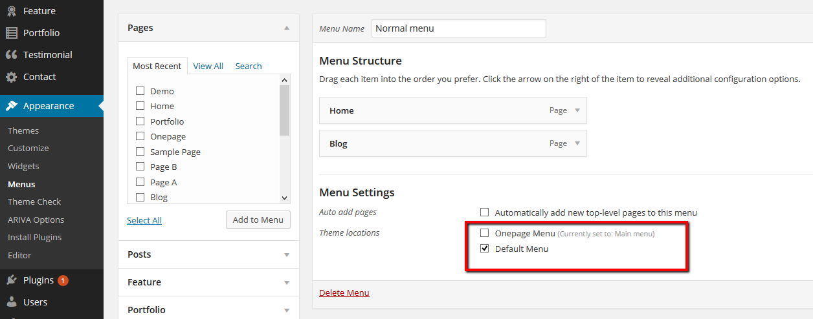
Create a blog page is simple task.
1. Go to Dashboard -> Pages -> Add New and select template for this page
2. Go to Setting Reading - > Select static page for Frontpage and blog
you can set blog page style and other config by go to Appearance -> ARIVA Options - > Blog Settings
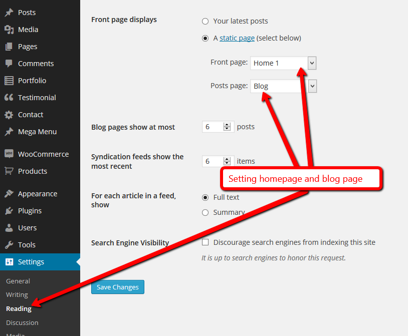
Ariva theme support 8 post formats they are: Standard,Image,Gallery,Video,Audio,Quote,Aside,Link, each post format has it owrn metas, when you to choose a post format the relevant post metas will be shown bellow:
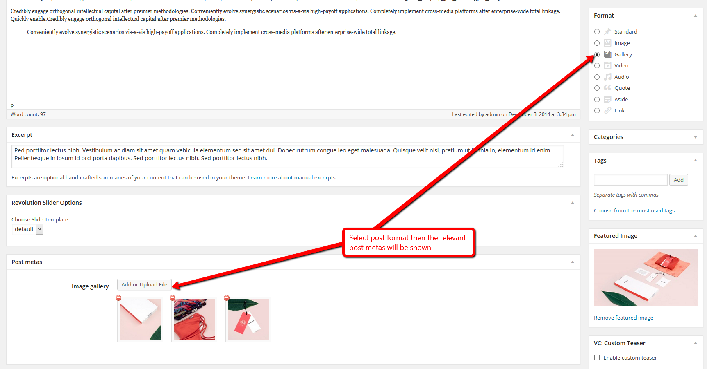
Portfolio setitng are very easy to understand, those setting are used for portfolio template and portfolio archive pages.
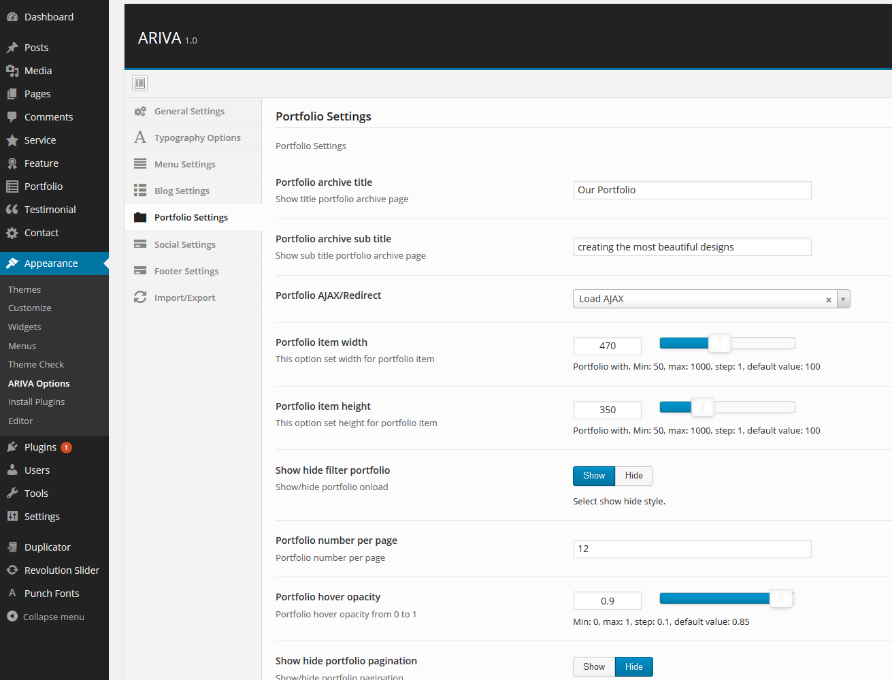
To create portfolio item you can go to Portfolio > New Portfolio
There are 4 portfolio format:
and 4 portfolio layout:
style you can choose from. Each combination of portfolio format and portfolio style will create a new portfolio item style.
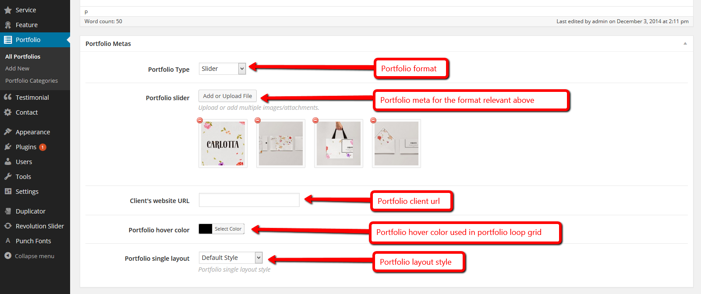
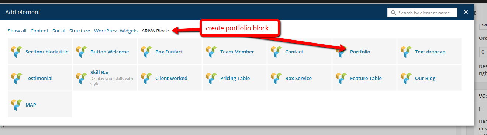
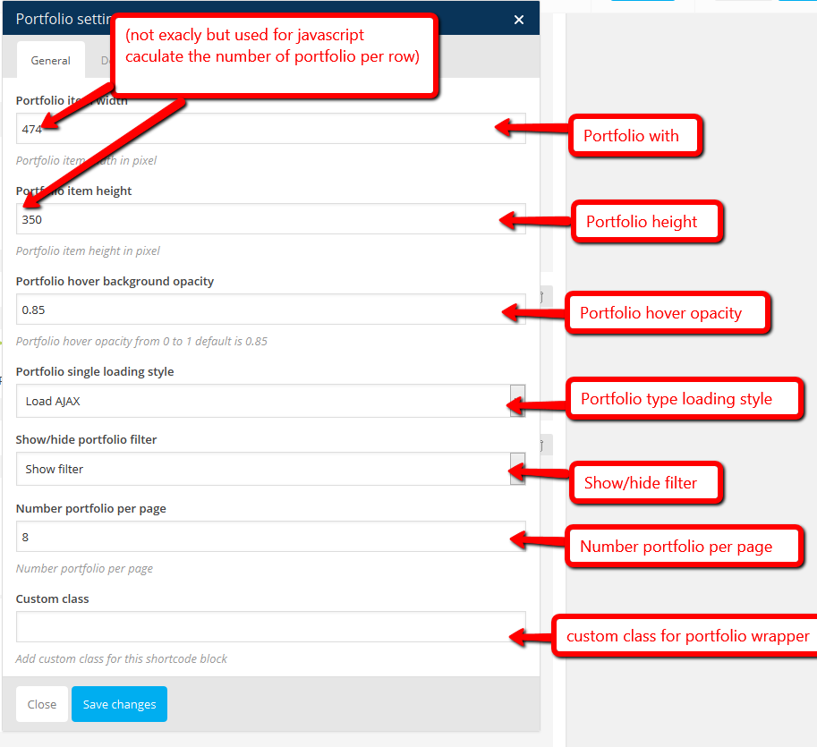
Together with Visual Composer defalt shortcode, Ariva has built in 15 other shortcodes
This shortcode is used for section blog title
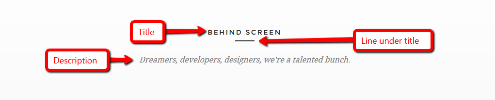
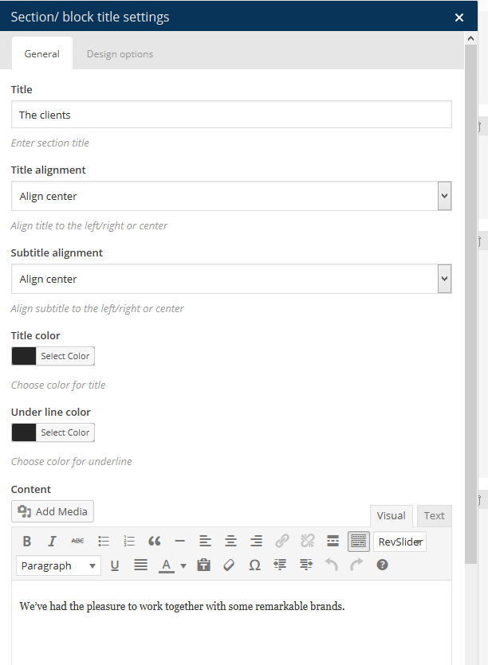
Used to create button with link
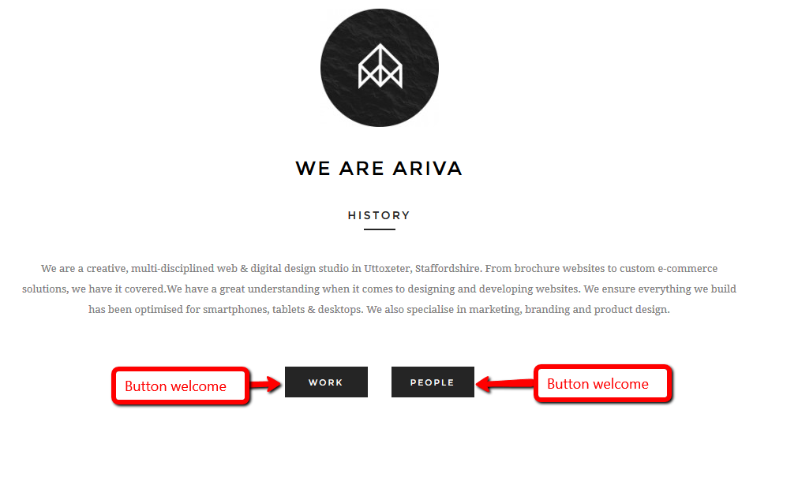
Funfact is used for funtact infomation
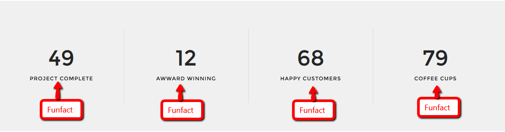
Team member is used to show member of the team, each team member has image, title, position, bio, socials
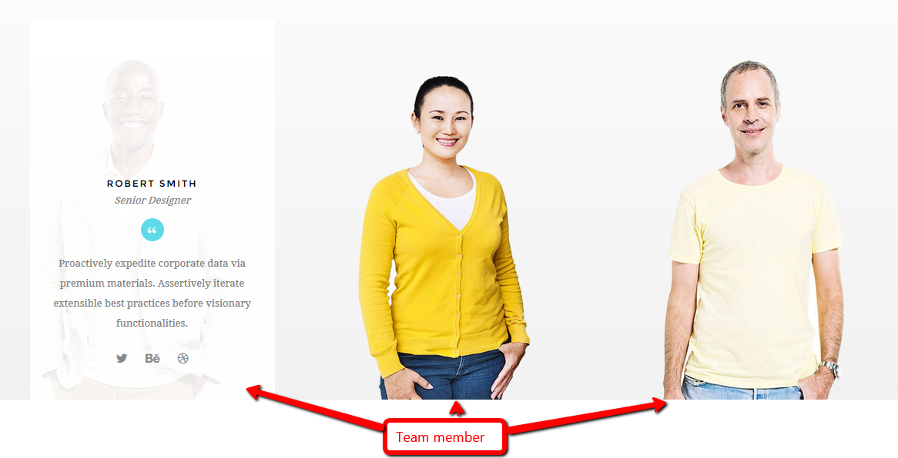
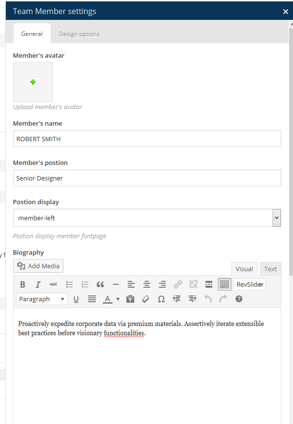
Used for contact blocks
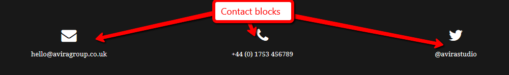
Used for portfolio section
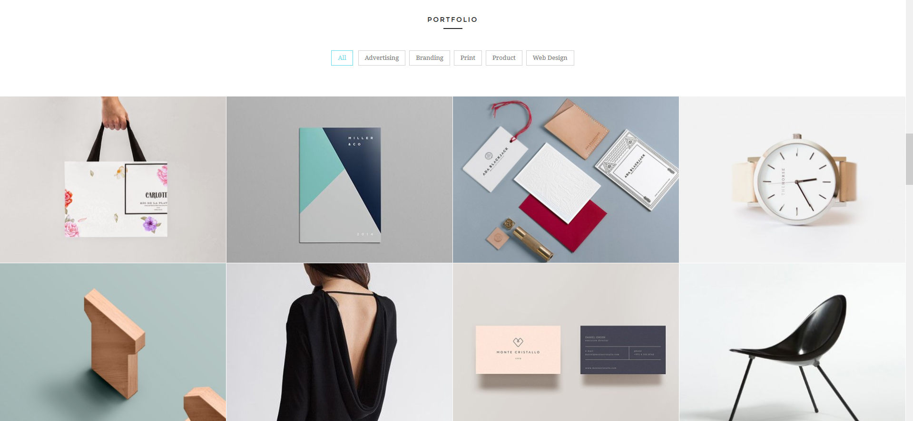
Text drop cap used for create Dropcap section(in post page)
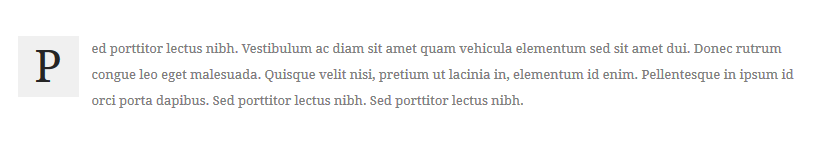
Testimonial block is used for testimonial block
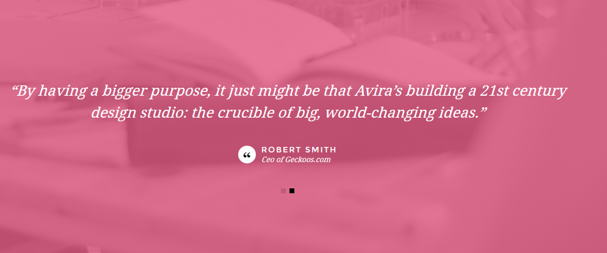
Create skill bars
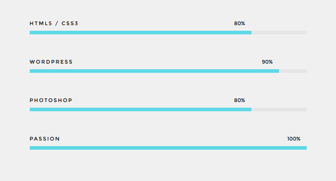
Create client logo list
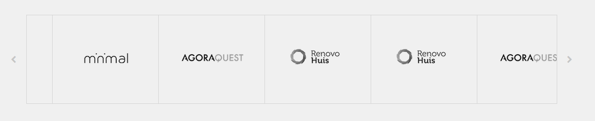
Create pricing table
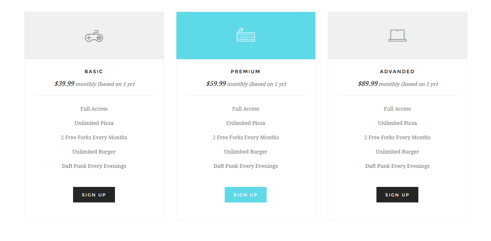
Create service section
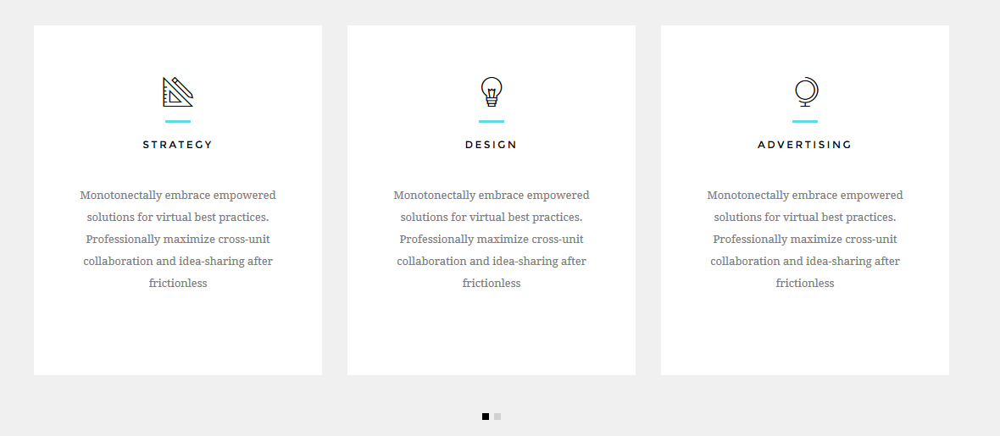
Create feature table
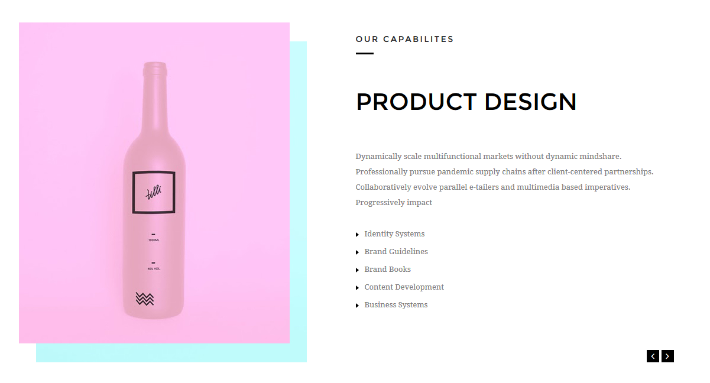
Create our plog section at homepage
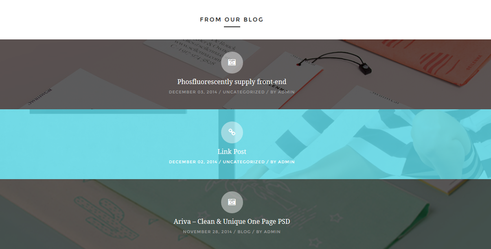
Create map section at bottom page
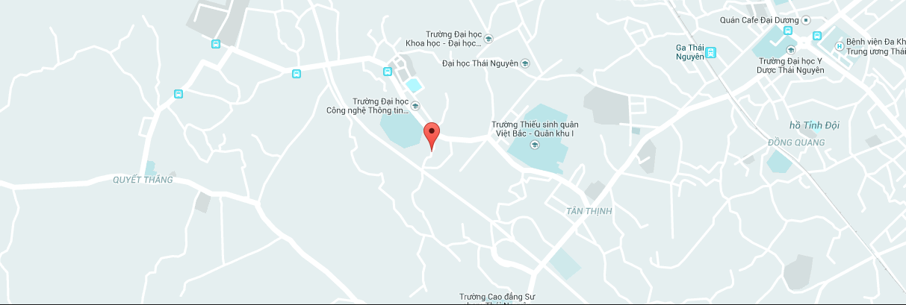
We did not included Woocomecer plugin in to the theme, so please refer woocommerce installation and configuration here
We recommend using Regenerate Thumbnails plugin to regenerate thumbnails for your products so the image will look much better
WPML Installation and Configuration please refer document here How to Download and Install WPML
Along the project, I've been using the following assets, even if they were images, icons or other files, as listed.
Please check change log here
Once again, thank you so much for purchasing this template. As I said at the beginning, I'd be glad to help you if you have any questions relating to this template.